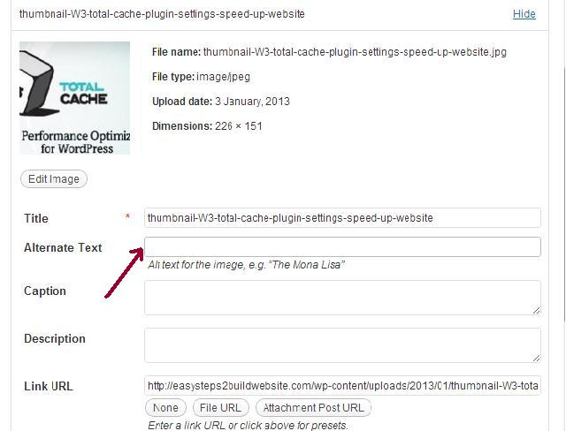

When it comes to on page optimization, we should take care of each and every thing. Because off page optimization can’t be 100% so in order to rank well, we need to make sure that our on page seo is up to the mark. SEO friendly images is one of the most important factor for on page search engine optimization. In this post, I will discuss how to make images seo friendly by using image ALT attribute/tag.
As we all know that search engine bot cannot read images so they rely on image alt tag to determine, what the image is all about. If we use our target keyword in the image alt attribute then it will help to optimize the post better for that main keyword.
Code: Image with ALT tag would look like below
<img class="class name" title="Image title here" src="Image path here" alt="This is the alt tag - Search engine look into this" width="" height="" />
Did you notice alt attribute in above code? I believe yes. This is where we need to use our main keyword, but wait!! If you are using 5 images in post then do we need to use main keyword in all the 5 images? No, its not a good practice, you must be thinking what’s the good practice to use keyword in ALT tag. Don’t worry, we will discuss this here in this post itself. But first let me show you where we need to add this, while uploading image in WordPress.
Image ALT Tag
When you upload any image in WordPress, the screen looks like the below screenshot. The “Alternate text” is not but your “ALT tag”.

What’s the best practice to have SEO friendly images in post
CASE 1: If you have only one image in the post then you can use your primary and secondary keyword in the ALT attribute, separated by comma (,).
CASE 2: For more than one image in post, you should use Latent semantic indexing keywords( or LSI keywords) in the ALT tag. Read more about LSI Keywords.
Above, we have discussed, how to use ALT attributes manually while uploading images in post, but if you want to automate this process and don’t want to add it manually then there are many WordPress plugin, which can automatically add this attribute in all uploaded images. However I don’t recommend this as if you have more than one image in post then these plugins would add same phrase or keyword in all the images, which may look spammy for search engine bot.
WordPress plugin for SEO friendly images
Download plugin from – WordPress.org: SEO friendly images plugin
Through this plugin, you can add alt tag automatically, you just need to specify template in plugin settings (if you are new to WordPress then read: how to install WordPress plugins).
Points to remember
1) Avoid keyword stuffing while adding this tag/attribute in images.
2) Make sure your robots.txt file allows search engine bot to visit image library, this way your images can rank well and can bring traffic through images searches.
3) Use proper image file name, generally when we upload images there name would be like DSC01.jpg or something like this, try to avoid such naming conventions and use meaningful names to make your posts and images seo friendly.
4) Compress images whenever required. Don’t have images with large size as it would reduce your page load time, which is also one of the on page seo factor. Read more about how to improve page load speed at: W3 total cache settings.
5) Resize your images to give a better user experience. Avoid too large and too small images as it would distract your readers.
6) Last but not least, as mentioned above use LSI keywords in alt tag
Hello,
Thank you for sharing this article.
I developed a plugin for my own use, but I just publish it on wordpress.
My plugin “Bulk SEO Image” is useful to update all ALT attributes of your images in one clic (for example, with the post title)
Compared to other plugin, the plugin changes the ALT attribut in one time, and is not called when a page is loading
I expect a lot of updates in the future, and I welcome any feedback!